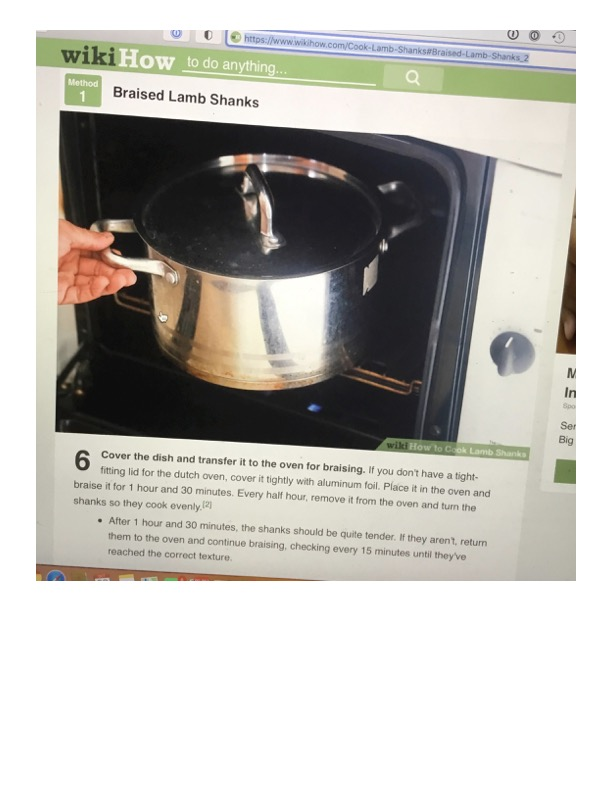

Braised Lamb Shanks

Original cookbook page 102
Cook: at least 1 hour and 30 minutes for braising
Ingredients
Instructions
- Cover the dish and transfer it to the oven for braising. If you don't have a tight-fitting lid for the dutch oven, cover it tightly with aluminum foil. Place it in the oven and braise it for 1 hour and 30 minutes. Every half hour, remove it from the oven and turn the shanks so they cook evenly.
Recipe #102 from collection